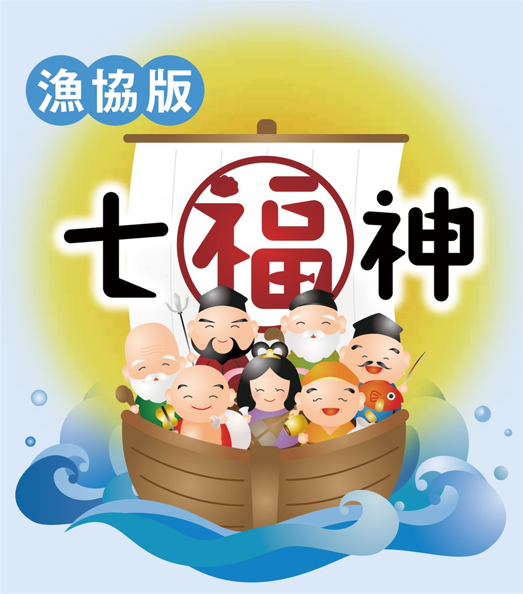
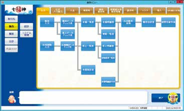
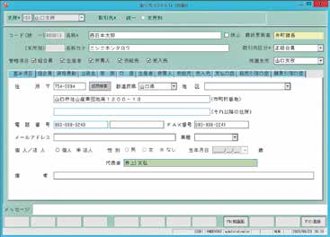
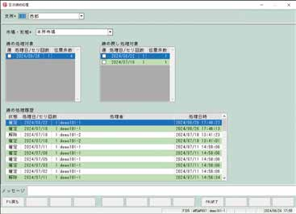
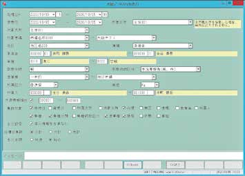
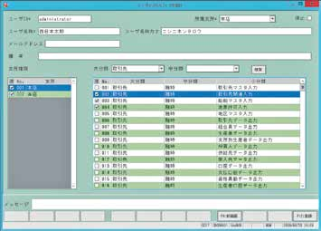
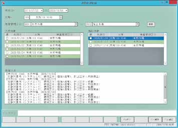
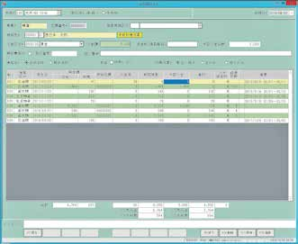
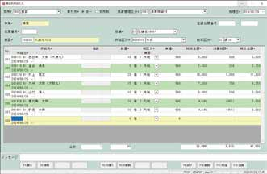
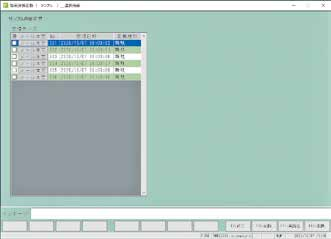

01
高機能・高品質で
高コストパフォーマンス
全国で多くの漁業協同組合様からご支持いただいている高機能・高品質でコストパフォーマンスの高いシステムです。
日本の漁業を未来へつなぐ
信頼と実績の漁協業務総合支援システム
漁業協同組合殿向けの経済事業をはじめ、多様な業務機能を包括したトータルシステムとしてパッケージ化されております。「事務処理の統一と効率化」に対し、弊社では、今までのノウハウと技術を結集して、「組合員様のサービス向上、事務処理の軽減」に繋がるシステムをご提供いたします。

約640拠点
長年の実績と経験から、高品質なシステムを短納期でご提供し
現在、約640の拠点でご利用いただいております。
漁協様のご要望に合わせて段階的なシステム導入が可能です。
無理なく計画的にシステムを導入・拡張することができます。
全国で多くの漁業協同組合様からご支持いただいている高機能・高品質でコストパフォーマンスの高いシステムです。
漁業協同組合様と共に課題に取り組み長年のノウハウと技術を結集してきました。
導入実績が豊富で、ご要望に合わせた柔軟なカスタマイズが可能です。
サブシステムも充実しており、漁業協同組合様に最適なシステムをご提供します。
事業所(支所)別・部門別マトリックス管理を実現！
各事業システムにおいて、事業所別・部門別に発生した伝票を組合員／取引先を名寄せし、債権の集中管理を実現させることが可能です。また、各事業システムと勘定科目を連動し、財務会計システムへ仕訳伝票を自動生成（伝票起票の二重処理廃止）させることが可能です。
大切なデータを有効に活用
様々な施設で投入されたデータを、連携・共有・加工することにより、投入された大切な資産を有効に活用することができます。二重入力の手間、入力ミスを軽減でき、業務の効率化につなげることが可能です。
漁協のあらゆる事業を、目的別のシステムでカバーします。分類を選ぶと絞り込めます。
現場の使いやすさにこだわった、9つの機能をご紹介します。

業務の流れが一目瞭然
運用に則した業務フローを構築することができる構造です。

一人一背番号制を採用
生産者・仲買人等の垣根を越えた未収未払の管理を行うことができます。

日時締め処理を解除できる機能
水揚伝票の日時締めを解除して水揚伝票の修正を行うことができます。変更を行った場合は変更履歴を残すことが可能です。

すべての入力データをExcel出力できる機能
入力したすべてのデータは自由に取り出すことができ、各種提出資料の作成等に役立ちます。

各ご担当者様ごとに利用できるシステムの権限設定機能
権限は事業・部門・機能ごとに設定することが可能です。

経済事業システムのデータを会計システムに連携する機能
予め登録してある設定を基に自動仕訳を行うことが可能です。お客様の任意のタイミングで一括して連携を行うことができます。

伝票ごとに入金管理が行える機能
「どの伝票に対する入金があったか」「未収の伝票はどれか」を明確に管理できます。また事業をまたいだ伝票の入金消込みも可能です。

商品をヘッダーにして入力できる機能
供給先に対して商品、数量、金額を入力する機能に加えて、ひとつの商品に対して供給先、数量、金額を入力する機能を用意しています。

市場から送られてくる仕切データを取り込む機能
市場から送られてくる仕切データを「七福神」へ取り込むことができます。仕切データを取り込むことによって入力の手間を省くことができます。
データを保存する場所が自分のパソコンや携帯端末などではなく、インターネット上に保存する使い方、サービスのことです。
業務システム「七福神」を、現在設置中のパソコンでシステム利用し、データ入力、データ編集、データ保存、印刷などすることができます。
サーバ、クライアントパソコンを購入しなくてよい為、初期費用がかかりません。メンテナンスコスト（サーバリプレイス等）が不要です。
津波や火災・地震などの災害発生した場合でも、大切なデータがなくなる心配がありません。
プログラムを一元管理している為、常に最新のシステムを使用することが可能です。
サーバを西日本情報システムにて管理している為、即日迅速なサポート対応が可能です。
月々にかかる費用は利用料のみの為、ランニングコストの大幅な削減が可能です。
| 一般的なシステム導入構成 | 「七福神」クラウド版 | |
|---|---|---|
| サーバの購入 | 必要 | 不要 |
| ソフトウェア | サーバで管理 | データセンターで管理 |
| データの管理 | お客様で管理 | データセンターで管理 |
| ソフトウェア障害対応 | 現地対応及び遠隔対応 | データセンターで対応 |
| 必要なランニングコスト | ハードウェア保守 ソフトウェア保守 サーバ稼働にかかる電気代 | 毎月の利用料 |
| メンテナンスコスト（※システム維持費用を除く） | サーバの入替 OS等のアップグレード | 不要 |
こんなことでお悩みではありませんか？
水産庁からの指導もあるように、地震や津波から大切なデータを守れる体制を求められています。
暗号化したデータを遠隔地にバックアップ
お客様の大切な情報資産をネットワーク経由で当社データセンターに低コストで確実に保護いたします。
大きな地震や津波などの災害時は、漁協内のバックアップだけでは大切なデータは守れません。VPN（バーチャル プライベート ネットワーク）という安全なネットワーク技術を利用し、「七福神」データをデータセンターへ格納します。
皆様からのお問い合わせにも迅速に対応し、安心と安全をお届けします。ソフトウェアのトラブル時やシステムに対するご質問、ご要望は、サポートセンターへお問い合わせください。
現場の入力から情報発信まで、漁協業務をさらに広げるサブシステム・機能です。
現場からスピーディーな事務が始まる
様々な機関への情報伝達
特定水産動植物等の国内流通の適正化に対応する
リアルタイムに仕切情報を発信
知りたい情報で市場を活性化する
コスト削減と業務効率化を実現する
荷受をスピーディーに行う
設置場所を選ばない軽量端末
使い慣れたオフコンの入力方式をさらに進化させた
導入実績が豊富で、ご要望に合わせた柔軟なカスタマイズが可能です。詳しくは製品PDFをご覧ください。